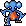

燕返Aerial Ace
- 屬性
- 分類
- 物理
- 威力
- 60
- 命中
- 必中
- SP
- 20
- 冷卻
- 1.4 秒（物理組）
- 範圍
- 近戰
- 距離
- 1 格
- 段數
- 1
- 前搖
- 0.25 秒
- 接觸
- 是
招式分類跟隨招式的 屬性 （第三世代規則，與火紅／葉綠相同）：火、水、草、電、超能力、冰、龍、惡屬性招式一律是特殊招式；其他屬性是物理招式（例外：分擔痛楚）。因此暗影球是物理招式，攀瀑是特殊招式。這是刻意設計，不是錯誤。
即時戰鬥效果
必定命中。
命中使用者正前方的一個目標。
升級時學會
招式光碟
 飛行屬性招式光碟 ・少見（每打倒一隻該屬性寶可夢 1%，由 10 個招式分配）
飛行屬性招式光碟 ・少見（每打倒一隻該屬性寶可夢 1%，由 10 個招式分配）
可以教會 158 隻寶可夢：
 小火龍
小火龍 火恐龍
火恐龍 噴火龍
噴火龍 巴大蝶
巴大蝶 大針蜂
大針蜂 波波
波波 比比鳥
比比鳥 大比鳥
大比鳥 烈雀
烈雀 大嘴雀
大嘴雀 穿山鼠
穿山鼠 穿山王
穿山王 尼多蘭
尼多蘭 尼多娜
尼多娜 尼多后超音蝠
尼多后超音蝠 大嘴蝠
大嘴蝠 派拉斯
派拉斯 派拉斯特
派拉斯特 摩魯蛾
摩魯蛾 地鼠
地鼠 三地鼠
三地鼠 喵喵
喵喵 貓老大
貓老大 可達鴨
可達鴨 哥達鴨
哥達鴨 猴怪
猴怪 火爆猴
火爆猴 卡蒂狗
卡蒂狗 風速狗
風速狗 大蔥鴨
大蔥鴨 嘟嘟
嘟嘟 嘟嘟利
嘟嘟利 卡拉卡拉
卡拉卡拉 嘎啦嘎啦
嘎啦嘎啦 袋獸
袋獸 飛天螳螂
飛天螳螂 暴鯉龍
暴鯉龍 多邊獸
多邊獸 化石盔
化石盔 鐮刀盔
鐮刀盔 化石翼龍
化石翼龍 急凍鳥
急凍鳥 閃電鳥
閃電鳥 火焰鳥
火焰鳥 快龍
快龍 超夢
超夢 夢幻
夢幻 火球鼠
火球鼠 火岩鼠
火岩鼠 火爆獸
火爆獸 小鋸鱷
小鋸鱷 藍鱷
藍鱷 大力鱷
大力鱷 咕咕
咕咕 貓頭夜鷹
貓頭夜鷹 芭瓢蟲
芭瓢蟲 安瓢蟲
安瓢蟲 叉字蝠波克基古
叉字蝠波克基古 天然雀
天然雀 天然鳥
天然鳥 毽子草毽子花
毽子草毽子花 毽子棉
毽子棉 長尾怪手
長尾怪手 蜻蜻蜓
蜻蜻蜓 黑暗鴉
黑暗鴉 夢妖
夢妖 天蠍
天蠍 巨鉗螳螂
巨鉗螳螂 狃拉
狃拉 熊寶寶
熊寶寶 圈圈熊
圈圈熊 信使鳥
信使鳥 巨翅飛魚
巨翅飛魚 盔甲鳥
盔甲鳥 多邊獸Ⅱ
多邊獸Ⅱ 班基拉斯
班基拉斯 洛奇亞
洛奇亞 鳳王
鳳王 時拉比木守宮
時拉比木守宮 森林蜥蜴
森林蜥蜴 蜥蜴王火稚雞
蜥蜴王火稚雞 力壯雞
力壯雞 火焰雞
火焰雞 狩獵鳳蝶
狩獵鳳蝶 毒粉蛾
毒粉蛾 狡猾天狗
狡猾天狗 傲骨燕
傲骨燕 大王燕
大王燕 長翅鷗
長翅鷗 大嘴鷗
大嘴鷗 雨翅蛾
雨翅蛾 懶人獺
懶人獺 過動猿
過動猿 請假王
請假王 土居忍士
土居忍士 鐵面忍者
鐵面忍者 脫殼忍者
脫殼忍者 勾魂眼
勾魂眼 可可多拉
可可多拉 可多拉
可多拉 波士可多拉
波士可多拉 電螢蟲
電螢蟲 甜甜螢
甜甜螢 青綿鳥
青綿鳥 七夕青鳥
七夕青鳥 貓鼬斬龍蝦小兵
貓鼬斬龍蝦小兵 鐵螯龍蝦
鐵螯龍蝦 太古羽蟲
太古羽蟲 太古盔甲
太古盔甲 變隱龍
變隱龍 熱帶龍
熱帶龍 阿勃梭魯
阿勃梭魯 寶貝龍
寶貝龍 甲殼龍
甲殼龍 暴飛龍
暴飛龍 金屬怪
金屬怪 巨金怪小火焰猴
巨金怪小火焰猴 猛火猴
猛火猴 烈焰猴
烈焰猴 波加曼
波加曼 波皇子
波皇子 帝王拿波
帝王拿波 姆克兒
姆克兒 姆克鳥
姆克鳥 姆克鷹
姆克鷹 音箱蟀
音箱蟀 紳士蛾
紳士蛾 三蜜蜂
三蜜蜂 蜂女王
蜂女王 雙尾怪手
雙尾怪手 飄飄球
飄飄球 隨風球
隨風球 夢妖魔烏鴉頭頭
夢妖魔烏鴉頭頭 魅力喵
魅力喵 東施喵
東施喵 聒噪鳥
聒噪鳥 圓陸鯊
圓陸鯊
尖牙陸鯊 烈咬陸鯊
烈咬陸鯊 鉗尾蠍
鉗尾蠍 龍王蠍
龍王蠍 小球飛魚
小球飛魚 瑪狃拉
瑪狃拉 巨蔓藤
巨蔓藤 波克基斯
波克基斯 遠古巨蜓
遠古巨蜓 葉伊布
葉伊布 天蠍王
天蠍王 多邊獸Ｚ
多邊獸Ｚ 艾路雷朵
艾路雷朵